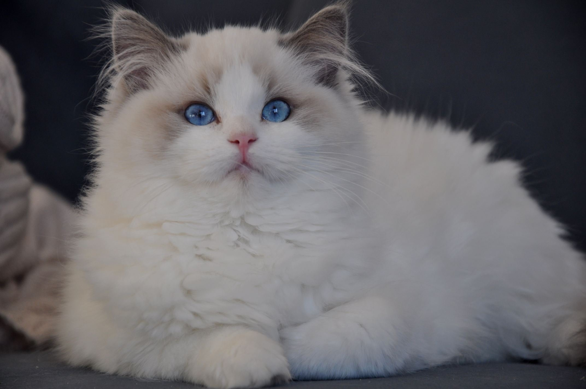

Порода Регдолл

Особливості характеру та догляду
Назва породи перекладається як «ганчір'яна лялька». Коли ви берете регдолла на руки, він повністю розслабляє м'язи та м'яко повисає, немов іграшка.
Ці коти мають неймовірно м'яку напівдовгу шерсть і виразні блакитні очі. Вони надзвичайно спокійні, лагідні, не виявляють жодної агресії та ідеально підходять для затишного сімейного життя.
- Рівень активності: низький/помірний (люблять спокійний відпочинок)
- Ставлення до людей: максимальна прив'язаність до власника
- Догляд за шерстю: середній (потребує регулярного розчісування)